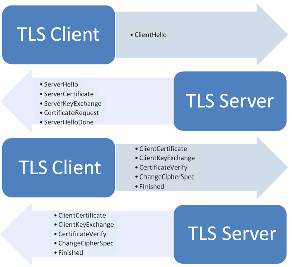
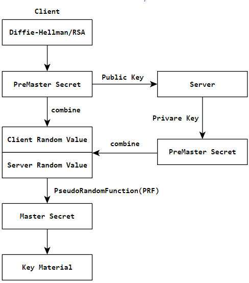

前几篇博文都是有关HTTPS的东西，有人可能会问，什么是HTTPS？为什么要用HTTPS？
- Alice和Bob是情人，他们每周都要写信。Alice 写好后，送到邮局，邮局通过若干个快递员到Bob，Bob回信过程类似。这是可以看成的简单的http的传输。
- 有一天，Alice觉得，要是写的信中途被人拆开了呢？毕竟一些小秘密不想让人知道啊。于是和Bob商定，采用加密的方法写。加密的方法比如使用古典密码的方案，如凯撒密码（A->E，B->F，即每个字母向右移动4个，(y + 4) mod 26）。这样加密了信的内容。
- 但是有一天，Alice收到Bob的信，信的内容经过解密后为分手之类的话。Alice跑去问Bob，Bob发现有人伪造了自己的信件，于是Alice和Bob商定，以后信上最后按上自己的指纹（就是数字证书），用来保证这封信别人伪造不了，此外，还用上校验码（数字签名），将信的内容经过hash，附带在信的末尾。在收信的一方收到后，首先查看是否有对方的指纹，并计算hash值和信的末尾所附带的是否一致，如果一致才进行解密查看。其实这样通信可以说从http到了https。
为什么需要HTTPS
通过上面的故事，现在可以来介绍一下https了。
https也叫做HTTP over TLS, HTTP over SSL, and HTTP Secure，Https 相比http来说，加密了传输过程和数据，能有效的保证了数据来源的可靠性、保密性以及数据的完整性。
- 保密性从何说起呢？这个很好理解。再http中，数据使用明文传输，容易受到第三方的窃取和修改，用户的隐私也容易泄漏。而使用https后，对于传输过程和数据都进行了加密，使得数据难以被窃听，隐私也不容易被泄漏。
- 数据的完整性呢？http中数据为明文，可能会被中间的劫持，然后修改。比较著名的有流量劫持，可以看知乎: 如何看待众多互联网公司联合声明：呼吁运营商严格打击流量劫持？。而https加密了内容，并且对传输的数据进行了校验，一旦被篡改，通信双方回立刻发现。
- 此外，还有来源的可靠性。比如访问hrwhisper.me，你可能访问一台假的服务器，而该服务器提供和真正服务器不一样的内容。使用https，服务器提供了身份的证书，能防止身份被冒充。
Https的过程

1. 客户端问候Clinethello
客户端向浏览器发出加密通信的请求。 这个请求有如下信息：
- 支持的加密通信协议版本、加密算法
- 随机数（一个时间戳加上28字节的随机数），后面用于生成对话密钥。
2. 服务器问候SeverHello
服务器接收到客户端请求，发送问候，该问候包含以下信息：
- 确认使用的加密通信协议版本和加密方法，比如TLS 1.2版本以及RSA公钥加密。（如果浏览器与服务器支持的版本不一致，服务器关闭加密通信。）
- 一个服务器生成的随机数，稍后用于生成"对话密钥"。
- 服务器证书。
3. 客户端回应
客户端受到服务器问候后，首先会验证服务器证书是否真实有效。该证书需要和服务器的域名一致，且在有效期内，并且由可信机构CA颁布。若该证书无效，会向用户显示警告，由用户选择是否继续访问（典型的看12306）。如果证书没有问题，客户端向服务器发送下面的信息：
- 随机数（pre-master secret），且该随机数用服务器公钥加密，防止被窃听
- 编码改变通知，表示随后的信息都将用双方商定的加密方法和密钥发送。
- 客户端握手结束信息。前面发送的所有内容的hash值，用来供服务器校验。
4. 服务器的最后回应
服务器收到客户端的pre-master secret后，结合之前的两个随机数，计算生成本次会话所用的“会话密钥”，然后向客户端发送下面信息：
- 编码改变通知
- 服务器握手结束信息。前面发送的所有内容的hash值，用来供客户端校验。
经历了四次握手后，客户端与服务器进入加密通信，其实之后就是普通的http协议，只不过用会话密钥加密加密内容。此外，一般而言，https连接只在第一次握手时使用非对称加密，通过握手交换对称加密密钥，在之后的通信走对称加密。因为一般而言，如RSA等非对称加密耗费的CPU资源较大。
Https的几个问题
会话密钥
会话密钥是怎么产生的呢？客户端和服务器在Hello都产生了一个随机数，结合pre-master secret一起生成了会话密钥（服务器和客户端由相同的三个随机数）。可以看如下图 
为什么上面的需要3个随机数，而不是只用pre-master secret生成会话密钥？
因为每个主机并不是都能产生完全的随机数的。有很多产生的只是弱随机数而已，比如范围小，可能被猜测。如果该随机数被破解，那么之前一系列握手都是没什么用的。因此用三个随机数一起生成密钥能使得伪随机数更接近随机。
数字签名和数字证书
https中使用了数字签名和数字证书。 数字签名是私人的，用于加密摘要和报文。 数字证书是由CA中心派发的，用于证明身份。 详情可以看 数字签名是什么？
Https一定安全么
不一定。
比如使用弱密钥交换协议 Diffie-Hellman 。
此外，也和使用的安全传输协议有关，建议的是使用TLS1.0以上的版本（如TLS1.0, TLS1.1，TLS1.2，TLS 1.0通常被标示为SSL 3.1，TLS 1.1为SSL 3.2，TLS 1.2为SSL 3.3。）而SSL2.0有严重的漏洞，SSL3.0也有 https://www.openssl.org/~bodo/ssl-poodle.pdf 。
如果你的站点采用了https，可以用可以用https://www.ssllabs.com/ssltest/ 测试安全性。
HSTS协议
HSTS的作用是强制客户端（如浏览器）使用HTTPS与服务器创建连接。可在保证安全性的前提下，提高网站的响应速度。此外HSTS可以很大程度上解决SSL剥离攻击，因为只要浏览器曾经与服务器创建过一次安全连接，之后浏览器会强制使用HTTPS，即使链接被换成了HTTP。
小结
Https 为我们带来更安全的传输。Chrome 56中，将输入密码的非https网站标记为不安全。 Google 把https 作为网站排名的一个因素......
https需要数字证书，那么如何获取证书呢？过去证书需要购买，而现在我们应该感谢 Let’s Encrypt 项目，可以免费的签发个人的证书，这样能更好的推广https, 从而有一天真正实现Https as default。
关于Let’s Encrypt获取证书可以参考本博客 Let’s Encrypt！ Centos 获取https证书攻略